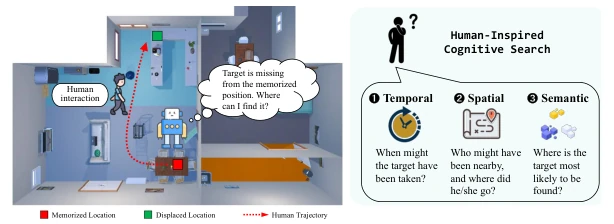
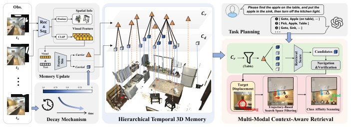
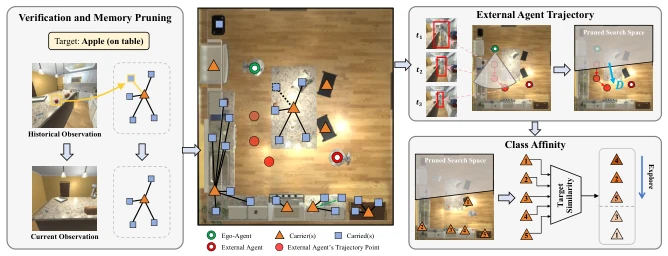
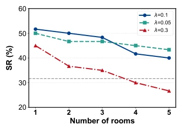
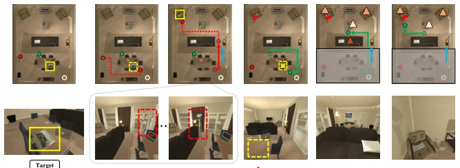
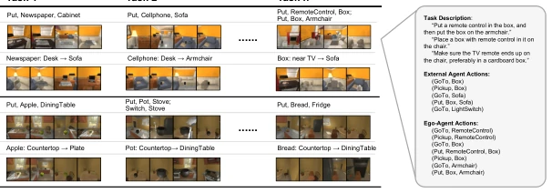
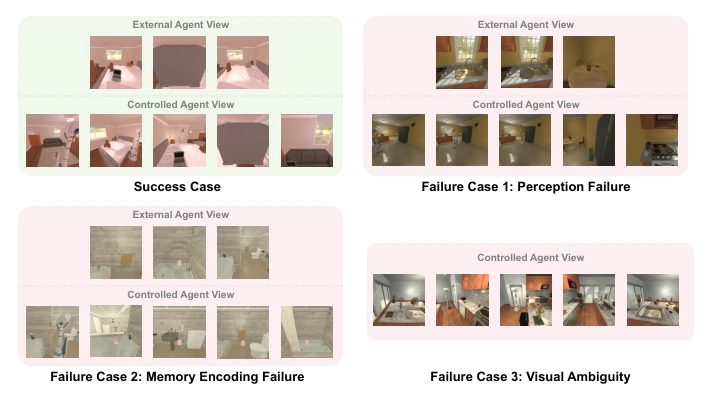

This paper finally punctures the "static world" bubble of embodied intelligence. HitMem's core selling point lies in acknowledging that objects are mobile, rather than rigidly adhering to memory coordinates like traditional methods. It employs a hierarchical topology graph, separating "carriers" and "carried objects", saving expensive geometric clustering, which is quite pragmatic. The time decay mechanism is also a highlight, scoring memories and automatically down-weighting old data. However, do not celebrate too early; the Dyna-THOR benchmark still runs in the AI2-THOR simulator, and the so-called "external agents" are merely script-controlled NPCs; in the real world, the complexity of humans moving things arbitrarily far exceeds this simulation. Additionally, semantic class affinity relies on LLM prompts; if the prompts are written off-target, the reasoning will drift. Overall, it is a decent dynamic memory scheme in the simulation world, but still far from real-world deployment, after all, "people" in simulation are more obedient than real people.
Embodied intelligence must execute long-horizon tasks, where the core difficulty lies in the environment being dynamic, while existing 3D memory frameworks are mostly based on static world assumptions [7, 9, 16, 21, 22, 35]. When objects are moved by human activity or invisible events, the agent navigates to the memory location but finds the target missing, generating memory-observation conflicts [3, 6, 19, 28]. Existing methods either rely on expensive geometric recomputation [8, 31, 35] or perform inefficient global re-exploration [17, 23, 32, 36]. More critically, the lack of temporal dynamic modeling leads agents to rely on outdated information [3, 6, 19, 28]. Inspired by human cognition (Fig 1), people combine spatial dynamics (e.g., trajectories of nearby people) and semantic commonsense (e.g., bowls are usually in the kitchen) when locating lost items, rather than blindly scanning. Therefore, integrating multimodal context knowledge (semantic commonsense + spatiotemporal dynamics) into the memory retrieval loop is key to achieving efficient dynamic object relocalization.

Fig. 1: Design intention of HitMem. Existing methods are constrained by static environment assumptions or resort to blind exploration when targets are displaced. In contrast, we construct a hierarchical temporal memory and leverage multi-modal environmental information for retrieval, effectively enhancing adaptability to dynamic environments and improving exploration efficiency.
方法Method
HitMem 整体流程分为记忆构建与检索两大部分。首先是分层时序 3D 记忆构建：系统通过连续感知构建对象中心的分层记忆图 Gt。节点实例化包含语义和空间属性，边则抽象为“载体 - 被载”拓扑关系，避免了复杂的实例级对应推理。引入时间衰减机制，为每个节点分配活性分数 A(v,t)，随时间指数衰减，载体对象衰减率为 0 以保持结构稳定，被载对象则根据场景规模调整衰减率，以此过滤过时观测。其次是多模态上下文感知检索：系统先进行分层语义查询，结合活性分数筛选候选目标。若导航后发现目标缺失（记忆 - 观测冲突），则激活两阶段重定位策略。第一阶段基于外部代理轨迹过滤搜索空间，计算位移向量 D 并限制探索扇区。第二阶段进行语义类亲和度扫描，计算目标类别与候选载体的亲和概率，指导代理按优先级探索。整个过程实现了从盲目探索到引导式空间推理的转变。
The HitMem overall workflow is divided into two major parts: memory construction and retrieval. First is hierarchical temporal 3D memory construction: the system constructs an object-centric hierarchical memory graph Gt through continuous perception. Nodes instantiate semantic and spatial attributes, while edges are abstracted as "carrier-carried" topological relationships, avoiding complex instance-level correspondence reasoning. A time decay mechanism is introduced, assigning an activity score A(v,t) to each node, decaying exponentially over time; carrier objects have a decay rate of 0 to maintain structural stability, while carried objects adjust the decay rate according to scene scale, thereby filtering outdated observations. Second is multimodal context-aware retrieval: the system first performs hierarchical semantic queries, combining activity scores to filter candidate targets. If the target is found missing after navigation (memory-observation conflict), a two-stage relocalization strategy is activated. The first stage filters the search space based on external agent trajectories, calculates the displacement vector D, and limits the exploration sector. The second stage performs a semantic class affinity scan, calculating the affinity probability between the target class and candidate carriers, guiding the agent to explore according to priority. The entire process achieves a transition from blind exploration to guided spatial reasoning.

Fig. 2: Overview of HitMem. HitMem is a hierarchical 3D memory framework that integrates spatial-semantic information with a decay mechanism to model temporal dy- namics. It employs multi-modal context-aware retrieval for efficient target localization. When objects are displaced, it leverages external agent trajectories with class affinity to rapidly identify candidate regions, enhancing robustness in dynamic environments.

Fig. 3: Retrieval strategy of HitMem. Upon navigating to the retrieved target object location, the ego-agent actively verifies its visual observation. If the target has been displaced, the corresponding obsolete memory node is removed, and a two-stage retrieval process is then initiated. First, the local trajectories of external agents are analyzed to infer potential displacement directions and narrow the search space. Sec- ond, class affinity scores between the target and candidate carriers are calculated to prioritize subsequent exploration.
The paper constructs the Dyna-THOR benchmark, based on AI2-THOR introducing external agents to actively move objects, simulating real-world dynamic interference. Comparison baselines include DELTA [19], ConceptGraphs [6], DovSG [32], and DynaMem [17]. Evaluation metrics are Success Rate (SR), Success weighted by Path Length (SPL), and Ground Truth Completion Rate (GCR). Results show HitMem significantly outperforms baselines across all metrics, especially in task completion capability under dynamic scenarios. Ablation studies show that removing the hierarchical structure leads to search space filtering failure, removing the time decay mechanism causes the agent to repeatedly navigate to outdated coordinates, and removing the retrieval strategy forces the agent to perform blind global search. Visualization results (Fig 5) show the process of the agent inferring displacement using external agent trajectories and successfully relocalizing.

Fig. 4: Performance across different scene scales and decay rate settings.

Fig. 5: Visualization of a representative dynamic object relocation process.

Fig. 6: Examples from the Dyna-THOR benchmark. We curated 12 distinct scenes spanning the four categories defined by AI2-THOR, encompassing a total of 60 long-term tasks. Each task is characterized by a specific set of definitions, external agent actions, and ego-agent actions. The figure above illustrates representative episodes derived from expert demonstrations.

Fig. 7: Failure cases of task executions on the Dyna-THOR benchmark. We also illustrate a success case highlighting the agent’s ability to adapt to dynamic object displacement through continuous observation. Furthermore, we analyze three representative failure modes: (1) Perception Failure (top-right), where slender object profiles impede recognition; (2) Memory Encoding Failure (bottom-left), causing ineffective exploration due to missed detections; and (3) Visual Ambiguity (bottom- right), arising from semantic confusion between similar objects (e.g., Cup vs. Mug).